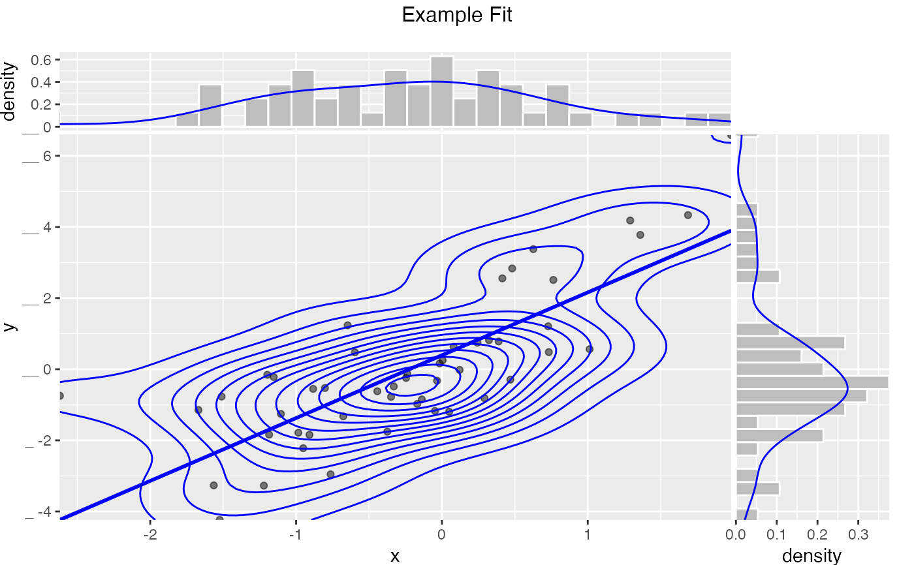
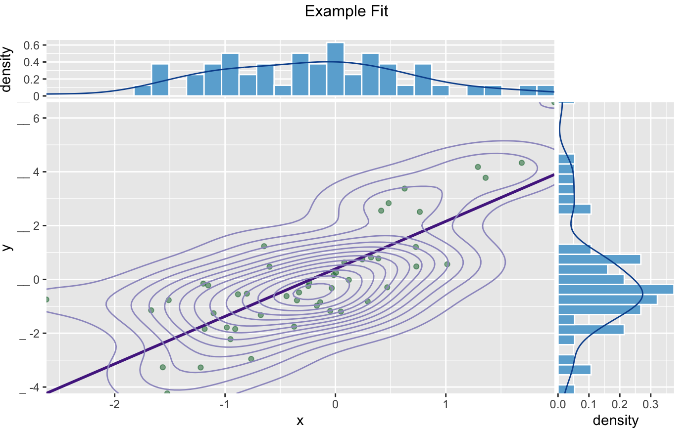

Plot a scatter plot with optional smoothing curves or contour lines, and marginal histogram/density plots.
Based on https://win-vector.com/2015/06/11/wanted-a-perfect-scatterplot-with-marginals/.
See also ggExtra::ggMarginal.
ScatterHist(
frame,
xvar,
yvar,
title,
...,
smoothmethod = "lm",
estimate_sig = FALSE,
minimal_labels = TRUE,
binwidth_x = NULL,
binwidth_y = NULL,
adjust_x = 1,
adjust_y = 1,
point_alpha = 0.5,
contour = FALSE,
point_color = "black",
hist_color = "gray",
smoothing_color = "blue",
density_color = "blue",
contour_color = "blue"
)data frame to get values from
name of the independent (input or model) column in frame
name of the dependent (output or result to be modeled) column in frame
title to place on plot
no unnamed argument, added to force named binding of later arguments.
(optional) one of 'auto', 'loess', 'gam', 'lm', 'identity', or 'none'.
logical if TRUE and smoothmethod is 'identity' or 'lm', report goodness of fit and significance of relation.
logical drop some annotations
numeric binwidth for x histogram
numeric binwidth for y histogram
numeric adjust x density plot
numeric adjust y density plot
numeric opaqueness of the plot points
logical if TRUE add a 2d contour plot
color for scatter plots
fill color for marginal histograms
color for smoothing line
color for marginal density plots
color for contour plots
plot grid
If smoothmethod is:
'auto', 'loess' or 'gam': the appropriate smoothing curve is added to the scatterplot.
'lm' (the default): the best fit line is added to the scatterplot.
'identity': the line x = y is added to the scatterplot. This is useful for comparing model predictions to true outcome.
'none': no smoothing line is added to the scatterplot.
If estimate_sig is TRUE and smoothmethod is:
'lm': the R-squared of the linear fit is reported.
'identity': the R-squared of the exact relation between xvar and yvar is reported.
Note that the identity R-squared is NOT the square of the correlation between xvar and yvar
(which includes an implicit shift and scale). It is the coefficient of determination between xvar and
yvar, and can be negative. See https://en.wikipedia.org/wiki/Coefficient_of_determination for more details.
If xvar is the output of a model to predict yvar, then the identity R-squared, not the lm R-squared,
is the correct measure.
If smoothmethod is neither 'lm' or 'identity' then estimate_sig is ignored.
set.seed(34903490)
x = rnorm(50)
y = 0.5*x^2 + 2*x + rnorm(length(x))
frm = data.frame(x=x,y=y)
WVPlots::ScatterHist(frm, "x", "y",
title= "Example Fit",
smoothmethod = "gam",
contour = TRUE)
#> Warning: The dot-dot notation (`..density..`) was deprecated in ggplot2 3.4.0.
#> ℹ Please use `after_stat(density)` instead.
#> ℹ The deprecated feature was likely used in the WVPlots package.
#> Please report the issue at <https://github.com/WinVector/WVPlots/issues>.

# Same plot with custom colors
WVPlots::ScatterHist(frm, "x", "y",
title= "Example Fit",
smoothmethod = "gam",
contour = TRUE,
point_color = "#006d2c", # dark green
hist_color = "#6baed6", # medium blue
smoothing_color = "#54278f", # dark purple
density_color = "#08519c", # darker blue
contour_color = "#9e9ac8") # lighter purple
